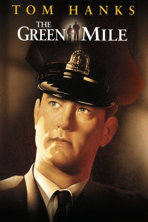
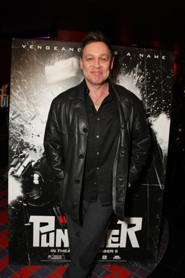
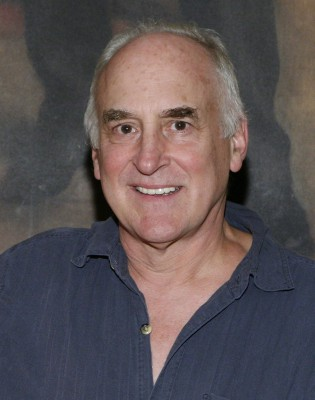
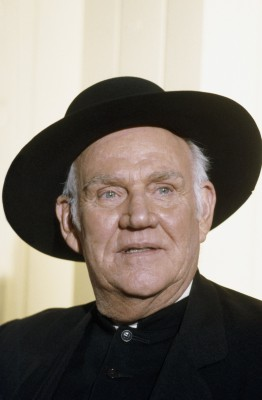
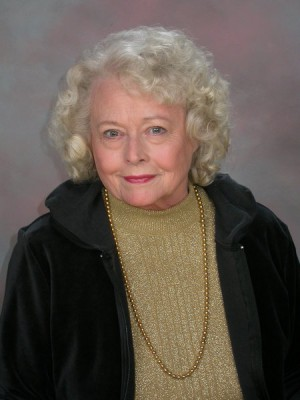
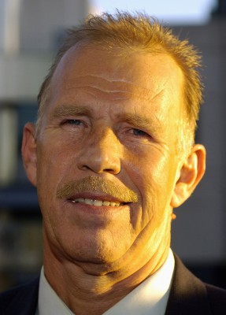
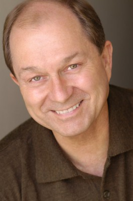

#346 The Green Mile
Auszeichnungen: für 4 Oscars nominiert
 
 IMDB-Wertung: 8.6 / 10
IMDB-Wertung: 8.6 / 10  IMDB-TOP-Platzierung: 31
IMDB-TOP-Platzierung: 31  Metascore: 61
Metascore: 61 
Paul Edgecomb und seine Kollegen sind Wärter im Todestrakt eines Gefängnisses in den 30ern. Paul versieht seinen Job zwar immer noch mit der größtmöglichen Menschlichkeit, doch er wird zunehmend zynischer, da er ständig Menschen sterben sieht. Außerdem ist er krank. Da kommt ein neuer Delinquent in den Trakt: John Coffey, ein farbiger Riese von friedlichster Bauart, der im Dunkeln Angst hat. Wie sich herausstellt, hat Coffey heilende Fähigkeiten, die auch Paul kennenlernt. Zunehmend gerät er in Zweifel, ob dieser Gigant sterben soll, vor allem da er die Morde, wegen der er verurteilt ist, nicht begangen zu haben scheint. Doch der Stuhl wartet und Coffeys Gabe droht für immer zu verschwinden ...
Jahr: 1999
Dauer: 189 Minuten
FSK: 12
Land: USA Studio: Warner Bros.Tonspuren:
Untertitel:
Auflösung: 1080p (1920×1080) Größe: 10240 MB
Genre: Drama, Fantasy, Krimi, Mystery
Regisseur:  Frank Darabont
Frank Darabont
Drehbuch: Stephen King, Frank Darabont
Soundtrack: Thomas Newman
Darsteller:
 Tom Hanks als Paul Edgecomb
Tom Hanks als Paul Edgecomb David Morse als Brutus 'Brutal' Howell
David Morse als Brutus 'Brutal' Howell Bonnie Hunt als Jan Edgecomb
Bonnie Hunt als Jan Edgecomb Michael Clarke Duncan als John Coffey
Michael Clarke Duncan als John Coffey James Cromwell als Warden Hal Moores
James Cromwell als Warden Hal Moores Michael Jeter als Eduard Delacroix
Michael Jeter als Eduard Delacroix Graham Greene als Arlen Bitterbuck
Graham Greene als Arlen Bitterbuck-  Doug Hutchison als Percy Wetmore
 Sam Rockwell als 'Wild Bill' Wharton
Sam Rockwell als 'Wild Bill' Wharton Barry Pepper als Dean Stanton
Barry Pepper als Dean Stanton-  Jeffrey DeMunn als Harry Terwilliger
 Patricia Clarkson als Melinda Moores
Patricia Clarkson als Melinda Moores Harry Dean Stanton als Toot-Toot
Harry Dean Stanton als Toot-Toot-  Dabbs Greer als Old Paul Edgecomb
-  Eve Brent als Elaine Connelly
 William Sadler als Klaus Detterick
William Sadler als Klaus Detterick- Mack Miles als Orderly Hector
 Paula Malcomson als Marjorie Detterick
Paula Malcomson als Marjorie Detterick- Bailey Drucker als Cora Detterick
-  Brian Libby als Sheriff McGee
 Brent Briscoe als Bill Dodge
Brent Briscoe als Bill Dodge Bill McKinney als Jack Van Hay
Bill McKinney als Jack Van Hay Gary Sinise als Burt Hammersmith
Gary Sinise als Burt Hammersmith Rachel Singer als Cynthia Hammersmith
Rachel Singer als Cynthia Hammersmith- Scotty Leavenworth als Hammersmith's Son
- Dee Croxton als Woman at Del's Execution
- Rebecca Klingler als Wife at Del's Execution
- Gary Imhoff als Husband at Del's Execution
 Van Epperson als Police Officer
Van Epperson als Police Officer Fred Astaire als actor in 'Top Hat' (archive footage) (uncredited)
Fred Astaire als actor in 'Top Hat' (archive footage) (uncredited)- Tommy Barnes als Tower Guard (uncredited)
 Phil Hawn als Police Photographer (uncredited)
Phil Hawn als Police Photographer (uncredited)- Judy Herrera als Bitterbuck's Daughter (uncredited)
-  Ted Hollis als Coffee Execution Witness (uncredited)
- Don Langley als Posse Member (uncredited)
- Robert Malone als Tower Guard (uncredited)
- Ginger Rogers als Actress in 'Top Hat' (archive footage) (uncredited)
- Todd Thompson als Prison Guard (uncredited)
- Rai Tasco als Man in Nursing Home
- Edrie Warner als Lady in Nursing Home
- Christopher Joel Ives als Howie Detterick
- Evanne Drucker als Kathe Detterick
- Katelyn Leavenworth als Hammersmith's Daughter
- Bill Gratton als Earl the Plumber
- David E. Browning als Reverend at Funeral
- Bill Craddock als Inmate (uncredited)
- Christopher Greenwood als Prison Guard (uncredited)
- Wes Hall als Prisoner (uncredited)
- Daniel D. Harris als Prison Minister (uncredited)
- Gower Mills als Inmate (uncredited)
Datei: X:\Person\Stephen King\Green Mile, The (1999, FSK12, 1920x1080).mkv seit 17.02.2015
Festplatte: HD Collection-7+mehr(A-Z)+Person
 Es gibt insgesamt 44 Filme in der Gruppe 'Person\Stephen King'
Es gibt insgesamt 44 Filme in der Gruppe 'Person\Stephen King'